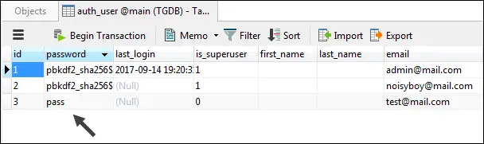

Django Authentication Framework Basics
Last updated on July 27, 2020
Django has an authentication framework which allows us to add login functionality to our application easily. In addition to that it provides following things:
UserModel.- Permissions - A way to give permission to the individual users.
- Groups - A way to assign permission to one or more users.
- A password hashing system.
- Form, views and URL patterns to login/logout users.
Django authentication framework is quite big. We will start from the basics and then move on to more complex topics later.
Setting Up Authentication Framework #
The authentication framework is implemented as 'django.contrib.auth' app but it also depends upon on 'django.contrib.contenttype' app and some middlewares.
To use authentication system you must have 'django.contrib.auth' and 'django.contrib.contenttype' in the INSTALLED_APPS list as follows:
TGDB/django_project/django_project/settings.py
1 2 3 4 5 6 7 8 9 10 11 12 | #...
INSTALLED_APPS = [
'django.contrib.admin',
'django.contrib.auth',
'django.contrib.contenttypes',
'django.contrib.sessions',
'django.contrib.messages',
'django.contrib.staticfiles',
'blog',
'cadmin',
]
#...
|
If you are adding 'django.contrib.auth' and 'django.contrib.contenttype' right now, run python manage.py migrate command. This command will create necessary tables in the database.
So what is django.contrib.contenttype ?
The django.contrib.contenttype app is used to keep track of different types of content in the project. This app has slightly advanced use cases, so we won't be covering it in this beginner tutorial.
Django authentication also uses sessions behind the scenes. As a result, you must have the following two middlewares in the MIDDLEWARE list in settings.py.
django.contrib.sessions.middleware.SessionMiddlewaredjango.contrib.auth.middleware.AuthenticationMiddleware
We have already learned what django.contrib.sessions.middleware.SessionMiddleware middleware does in Session in Django lesson.
The sole job of django.contrib.auth.middleware.AuthenticationMiddleware is to add a user attribute to the request object. The utility of this will become clear in the upcoming sections.
Finally, MIDDLEWARE setting should look like this:
1 2 3 4 5 6 7 8 9 10 11 12 | #...
MIDDLEWARE = [
'django.middleware.security.SecurityMiddleware',
'django.contrib.sessions.middleware.SessionMiddleware',
'django.middleware.common.CommonMiddleware',
'django.middleware.csrf.CsrfViewMiddleware',
'django.contrib.auth.middleware.AuthenticationMiddleware',
'django.contrib.messages.middleware.MessageMiddleware',
'django.middleware.clickjacking.XFrameOptionsMiddleware',
'django.middleware.common.BrokenLinkEmailsMiddleware',
]
#...
|
Type of Users #
Django has two types of users:
A user who is not logged in is called an Anonymous User. This type of user is represented using
AnonymousUsermodel. For example, the users who come to our site to consume content belongs toAnonymousUsermodel.Another type of users are the ones who are logged in to the application. This type of users belongs to the
Usermodel. It doesn't matter whether the logged in user is a superuser or a staff member or what privilege he has. If he is logged in, he belongs to theUsermodels.
The AnonymousUser model is not much used apart from the web requests but the User model is used in many different places. Here are some examples:
- Registering new users.
- Assigning privilege.
- Restricting access.
- Associate content with its creators.
We will spend most of our time with the User model class. The following section explains everything you need to know about the User model.
The User Model #
The User model is considered as the heart of Django authentication framework. To use it you must first import it from django.contrib.auth.models.
1 2 3 | >>>
>>> from django.contrib.auth.models import User
>>>
|
Creating a User object #
Django provides a custom method on objects manager named create_user() to create users. It accepts at-least three parameters username, password, and email.
1 2 3 4 5 6 7 8 9 10 11 12 | >>>
>>> u = User.objects.create_user(
... 'noisyboy',
... 'noisyboy@mail.com',
... 'password'
... )
>>>
>>>
>>> u
<User: noisyboy>
>>>
>>>
|
The User model has a lot of attributes. The following table lists all the attributes of the User model.
| Attribute | Description |
|---|---|
username |
A required, 30 character field to store username. It can only take alphanumeric characters i.e letters, digits and underscores. |
password |
A required field to store password. |
first_name |
An optional field of 30 characters to store user's first_name. |
last_name |
An optional field of 30 characters to store user's last_name. |
email |
An optional field to store email address. |
is_active |
A boolean field which tells whether the account can be used to login or not. |
is_superuser |
A boolean field if set to True then the account has all the permissions. |
is_staff |
A boolean field if set to True then it means user can access Django admin site. |
date_joined |
A field to store date and time when the account was created. This is field is automatically filled with the current date and time when the account is created. |
date_joined |
A field containing the date and time of the account creation. |
last_login |
A field containing the date and time of the last login. |
To get attribute values of the newly created User instance type the following code:
1 2 3 4 5 6 7 8 9 10 11 12 13 14 15 16 | >>>
>>> User.objects.filter(username='noisyboy').values()
<QuerySet
[{
'password': 'pbkdf2_sha256$30000$U1SPNlOr8xJe$58trstDH3OF1APsthvGVJZ5u8mZxOB1ppreoan2UyEs=', 'date_joined': datetime.datetime(2017, 4, 18, 13, 45, 33, 681567, tzinfo=<UTC>),
'email': 'noisyboy@mail.com',
'is_superuser': False, '
username': 'noisyboy',
'first_name': '',
'id': 15,
'last_name': '',
'last_login': None,
'is_staff': False,
'is_active': True
}]>
>>>
|
Recall that values() method returns a Queryset object containing dictionary rather than model instances, where each dictionary key corresponds to the attribute defined in the model.
As you can see, currently the noisyboy is not a superuser (because 'is_superuser' key is set to False). We can easily change that by assigning is_superuser attribute to True and then calling the save() method as follows:
1 2 3 4 5 6 7 | >>>
>>> u.is_superuser = True
>>>
>>> u.is_superuser
True
>>> u.save()
>>>
|
An important thing to notice here is that the value of password field in the output of User.objects.filter(username='noisyboy').values() command. It looks something like this:
'password': 'pbkdf2_sha256$30000$U1SPNlOr8xJe$58trstDH3OF1APsthvGVJZ5u8mZxOB1ppreoan2UyEs='
Recall that while creating noisyboy user we have used the string "password" as account password. So how come it becomes so long?
It is a common security measure to not store passwords as plaintext into the database. Instead, we use mathematical functions which converts our password to a long string like the one above. Such functions are called hash functions and the long string they return is called password hash. The idea behind these functions is this - creating password hash from a password is easy, but the reverse process is not possible.
Okay! That's enough Cryptography for now.
By default, Django uses PBKDF2 algorithm to create password hashes.
This is the reason why we used create_user() method to create User object instead of create() or bulk_create() method. The create_user() method automatically converts a password to a hash. If we had used create() or bulk_create() method, it would have saved the password as plain text into the database. We can verify this by creating a new user using the create() method as follows:
1 2 3 4 5 6 7 8 9 10 11 | >>>
>>> test_user = User.objects.create(
... username='test',
... email='test@mail.com',
... password='pass'
... )
>>>
>>>
>>> test_user.password
'pass'
>>>
|
Django stores the user data in the auth_user table. After executing the above code the auth_user table should look like this:

Indeed, the password is stored in plain text in the database.
Here are some of the methods supplied by the User model:
| Method | Description |
|---|---|
get_username() |
returns username of the user. To get the username you should use this property instead of directly referencing the username attribute. |
get_full_name() |
returns the value of first_name and last_name attribute with a space in between |
check_password(pass) |
It returns True if string passed is the correct password, otherwise False. It first converts the password to password hash then compares it to the one saved in the database. |
set_password(passwd) |
It is used to change the password of the user. It takes care of password hashing. Note that set_password() doesn't save the User object, that's why you have to call save() method to commit the changes to the database. |
is_authenticated() |
A logged in user is referred to as authenticated. It returns a True or False. |
is_anonymous() |
returns True if the user is anonymous, otherwise False. |
get_username() #
1 2 3 4 5 6 | >>>
>>> u.get_username()
'noisyboy'
>>> u.get_full_name()
''
>>>
|
check_password() #
1 2 3 4 5 6 | >>>
>>> u.check_password("mypass")
False
>>> u.check_password("password")
True
>>>
|
set_password() #
1 2 3 4 5 | >>>
>>> u.set_password("pass")
>>> u
<User: noisyboy>
>>>
|
To commit the changes call the save() method.
1 2 3 | >>>
>>> u.save()
>>>
|
is_authenticated() #
1 2 3 4 | >>>
>>> u.is_authenticated()
True
>>>
|
Here is_authenticated() method returns True, it doesn't mean that the noisyboy is currently logged in to the Django Admin. In fact, inside the Django shell, is_authenticated() when used on User instances always returns True. We can verify this fact by creating a new user and then checking the return value of is_authenticated() method.
1 2 3 4 5 6 7 8 9 10 | >>>
>>> new_user = User.objects.create_user(
... 'newtestuser',
... 'newtestuser@mail.com',
... 'pass'
... )
>>>
>>> new_user.is_authenticated()
True
>>>
|
Inside Django Shell is_authenticated() is useless. Its real utility comes into play in views and templates. As we will see.
is_anonymous() #
1 2 3 4 | >>>
>>> u.is_anonymous()
False
>>>
|
The object u belongs to the User class that's why is_anonymous() returns False. Had it belong to the AnonymousUser class, it would have returned True.
AnonymouseUser Model #
Django implements a special class called AnonymousUser which represents users which are not logged in. In other words, the regular user which come to our site to consume content belongs to AnonymousUser class. The AnonymousUser class has almost all the same methods and attributes as that of User class with the following difference.
idorpkattribute is always containsNone.usernameattribute will always be an empty string i.e''.is_anonymous()isTrueinstead ofFalse.is_authenticated()isFalseinstead ofTrue.is_staffandis_superuserwill are always beFalse.is_activewill is always beFalse.- Trying to call
save()ordelete()onAnonymousUserobject will raiseNotImplementedError.
It is important to note that AnonymousUser class doesn't have any kind of relationship with User class. It is a separate class with its own methods and attributes. The only similarity between User and AnonymousUser class is that most of the attributes and methods are same. It is not a design flaw, It is done on purpose to make things easier.
Earlier in this chapter, we have discussed that django.contrib.auth.middleware.AuthenticationMiddleware middleware adds a user attribute to the request object. The request.user returns either an instance of AnonymousUser or User class. Because both User and AnonymousUser class implements the same interface, we can use any attribute/method to get the relevant information without worrying about whether the object is of type AnonymousUser or User.
The following example perfectly describes how we can use this behavior to our advantage. The test_logged_on_or_not() view tests whether the user is logged in or not using the is_authenticated() method. We are able to write this code because is_authenticated() is implemented in the AnonymousUser class as well as in the User class.
1 2 3 4 5 | def test_logged_on_or_not(request):
if request.user.is_authenticated():
return HttpResponse("You are logged in.")
else:
return redirect("login")
|
This is how the above code works:
If a user is logged in then the output will be "You are logged in.". Otherwise, the user will be redirected to the login page.
In practice, you would probably never need to create an object of type AnonymousUser. Just in case, you are curious, the following code shows you how to create an object of AnonymousUser type.
1 2 3 4 | >>>
>>> from django.contrib.auth.models import AnonymousUser
>>> au = AnonymousUser()
>>>
|
One we have access to AnonymousUser instance we can use any attribute/method to get any relevant information.
1 2 3 4 5 6 7 8 9 10 11 12 13 14 15 16 17 18 19 20 21 22 23 24 25 26 27 28 29 30 31 32 33 | >>>
>>> print(au.id)
None
>>> print(au.pk)
None
>>>
>>> au.username
''
>>>
>>> au.is_authenticated()
False
>>>
>>> au.is_anonymous()
True
>>>
>>> au.is_active
False
>>>
>>> au.is_superuser
False
>>>
>>>
>>> au.delete()
Traceback (most recent call last):
...
NotImplementedError: Django doesn't provide a DB representation for AnonymousUser.
>>>
>>>
>>> au.save()
Traceback (most recent call last):
...
NotImplementedError: Django doesn't provide a DB representation for AnonymousUser.
>>>
|
As described, calling save() or delete() on AnonymousUser object raises NotImplementedError exception.
Load Comments